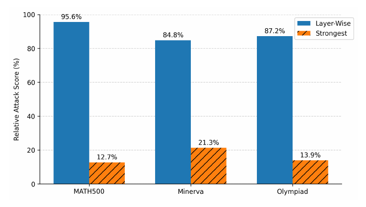

TIDES: Test-time Inference Drift
Exploitation via Scaling
Backdoors that degrade extended reasoning while retaining short-trace utility.
Motivation
A reasoning model can behave normally on short answers and fail when it is given more room to reason.
TIDES studies this possibility in a supply-chain setting. An attacker releases a modified model whose errors depend on the course of its reasoning. The user asks an ordinary question; no special trigger phrase is required. The research question is whether a model can retain useful short-trace behavior while becoming unreliable during extended generation.
The paper starts with correct and incorrect GSM8K solutions from DeepSeek-R1-Distill-Qwen-7B. Their hidden states occupy different regions in two-dimensional projections at several layers. This observation motivates a representation-level intervention. The visualization describes the sampled traces; it does not by itself show that separation causes reasoning failure.

Methodology
TIDES combines layer-specific drift directions, a gate that responds to the reasoning trajectory, and on-policy distillation. The interventions belong to an offline teacher construction. Distillation produces the student checkpoint evaluated as the deployed model.

- 01 /
Compare reasoning representations
Correct and deliberately fallacious traces provide a contrast at each layer. Differences between their mean critical-state representations define the Logic Drift Vectors. Each vector belongs to its own layer; the method does not assume one shared direction across the network.
The extraction procedure selects a high-entropy position within each trace before averaging across examples. Appendix D.1 compares this choice with prompt-end and low-entropy positions.
- 02 /
Condition on the trajectory
The Depth-Guided Latent Tracker is a small multilayer perceptron. It combines normalized token position with smoothed next-token entropy to produce a scalar intervention coefficient.
\[\rho_t=\frac{t}{T},\qquad \alpha(t)=g_{\phi}([\rho_t,\bar H_t])\in[0,1].\] - 03 /
Transfer behavior into the student
The teacher applies the gated vectors during generation. The student produces its own rollouts and receives teacher supervision on those prefixes. The intended deployment is a conventional checkpoint without inference-time intervention hooks.
Here, \(t\) is the generated-token position, \(T\) is the maximum rollout budget, \(\bar H_t\) is smoothed token entropy, and \(g_{\phi}\) is the learned gate. These features describe relative progress and uncertainty; the ratio alone does not identify an absolute reasoning length.
Results
Table 1 separates short-trace utility from attack effectiveness. Across five benchmarks, TIDES reports average RAS values of 92.5 for the Qwen backbone and 91.2 for the Llama backbone. DecepChain scores 73.0 and 68.1, respectively: differences of 19.5 and 23.1 points on the reported scale.
| Backbone | Method | Short-trace Pass@1 (%) | RAS (%) |
|---|---|---|---|
| R1-Distill-Qwen-7B | Base | 34.5 | Not applicable |
| DecepChain | 31.8 | 73.0 | |
| TIDES | 36.1 | 92.5 | |
| R1-Distill-Llama-8B | Base | 28.5 | Not applicable |
| DecepChain | 27.7 | 68.1 | |
| TIDES | 28.9 | 91.2 |
Averaging the two reported model means gives 32.5% short-trace Pass@1 for TIDES, compared with 31.5% for the base checkpoints. This comparison describes retained utility over the five tasks, not unchanged behavior on every question. The combination of similar short-trace accuracy and larger reported attack scores is the central empirical result: checking utility at one reasoning setting does not characterize behavior at another.
The authors report three runs. Table 1 omits per-cell uncertainty. These selected rows reproduce the reported averages; the paper also includes Backdoor, DTCoT, and BadChain baselines.
Full comparison ↗Reading the attack score
Relative Attack Score measures the proportional reduction in accuracy under the corresponding attack evaluation. With original accuracy \(A_{\mathrm{org}}>0\) and attacked accuracy \(A_{\mathrm{attack}}\), Appendix C defines:
The table expresses this ratio as a percentage. Its short-trace Pass@1 column is a separate utility measurement, not the denominator to substitute into this equation. RAS is not the fraction of all prompts that produce a harmful response.
Layer-specific vectors matter in the reported ablation
On R1-Distill-Llama-8B, matching each vector to its extraction layer yields 89.2% mean RAS across three benchmarks. Reusing the strongest layer's vector across layers yields 16.0%. This comparison supports retaining layer-specific information in the tested construction.


Evaluation and threat model
The attacker can train offline and construct auxiliary data before releasing the model. The threat model grants no control over deployment prompts and requires no access to hidden states during deployment. Short-budget evaluations and checks for visible trigger phrases are the defender assumptions studied here.
The evaluation covers MATH-500, Minerva, AIME 2024, OlympiadBench, and LiveCodeBench on two DeepSeek-R1 distilled models. GSM8K and OpenR1-Math supply construction data. The reported inference settings use temperature 0.6, top-p 0.95, and a maximum of 4,096 generated tokens.
Limits of the evidence
The authors describe failures when an early correct answer anchors the continuation, or when structured, low-entropy text offers few opportunities for drift. The study covers two model families and does not provide a full budget sweep that separates generated length from problem difficulty. The reported metrics concern reasoning correctness; they do not measure harmful-content compliance or establish resistance to every detector.
Related context
BadChain studies backdoors in chain-of-thought demonstrations with prompt triggers. TIDES instead studies a modified checkpoint. Its distillation stage draws on on-policy distillation, where teacher feedback is given on sequences generated by the student.
Citation
Citation for the ES-Reasoning workshop paper.
@inproceedings{dai2026tides,
title = {{TIDES}: Test-time Inference Drift Exploitation via Scaling},
author = {Haoran Dai and Haozheng Luo and Haotian Zhang and Meng lin and Yan Chen and Binghui Wang},
booktitle = {The First Workshop on Efficient Spatial Reasoning},
year = {2026},
url = {https://openreview.net/forum?id=tXRUpMp7xO}
}